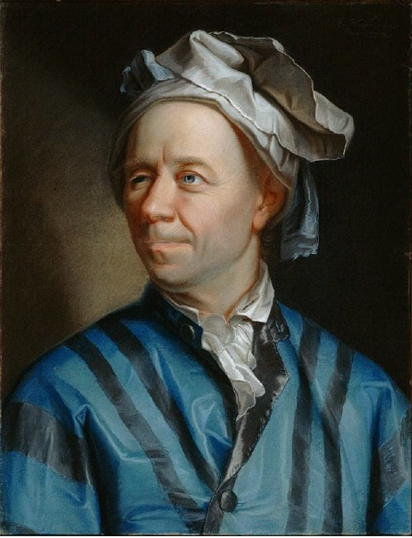
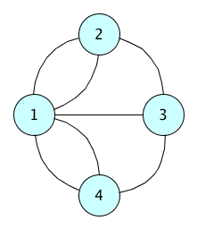
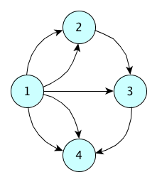

Communication 1
DHDK has its own Twitter account: @UniboDHDK
Communication 2
Yesterday, I've posted in the Telegram chat a sort of Christmas present – or, a kind of bonus of the course
It is available at: https://doi.org/10.5281/zenodo.2204837
Any question about the previous lecture?
Historic hero: Euler
He was one of the most important men of Science of the whole history
Contributions in Mathematics, Physics, Astronomy, Logics
His works created entirely-new scholarly disciplines and fields
E.g.: graph theory - by demonstrating the problem of the seven bridges of Königsberg
The city of Königsberg

Is it possible to walk around the city and to cross each of the bridges once and only once?

Graph: nodes (circles) connected by edges
Resolution
An edge is followed every time one enters in a node, and another edge is needed to go out from that node
Each node, except the starting and ending nodes, should have an even number of edges for being satisfactorily traversed one or more times
But all the nodes in the graph have an odd number of edges
Contradiction: the problem of the seven bridges of Königsberg has no solution
Graph
Data structure used to describe in abstract terms several well-known situations
Routes between cities
Connections to people you know in social networks
Organisation of links between webpages on the Web
Two different kinds of graphs
undirected graphs, where an edge can be traversed in one way or the other indifferently
directed graphs, where the edge has a clear specification of the node-to-node direction that can be followed
Python package: NetworkX
Undirected graph
Constructor: Graph()
Used for creating undirected graphs without any possible multiple edge between two nodes
Constructor: MultiGraph()
Used for creating undirected graphs which permit the specification of multiple edges between the same two nodes
NetworkX package allows us to associate as a node any possible immutable object definable in Python, that can be, thus, connected by means of one or more edges
Methods
add a node: <graph>.add_node(<node>)
If a node with that value is already present, the method has no effect on the graph
add an edge: <graph>.add_edge(<node_1>, <node_2>)
Inverting the position of the input nodes does not change the result in an undirected graph
remove a node: <graph>.remove_node(<node>)
removes <node> from the graph as well as all the edges that involve it directly
remove an edge:
<graph>.remove_edge(<node_1>, <node_2>)
removes the particular edge between the two nodes specified
Example - Graph()
from networkx import Graph
my_graph = Graph()
my_graph.add_node(1)
my_graph.add_node(2)
my_graph.add_node(3)
my_graph.add_node(4)
my_graph.add_edge(1,2)
my_graph.add_edge(1,3)
my_graph.add_edge(1,4)
my_graph.add_edge(2,3)
my_graph.add_edge(3,4)Example - MultiGraph()
from networkx import MultiGraph
my_graph = MultiGraph()
my_graph.add_node(1)
my_graph.add_node(2)
my_graph.add_node(3)
my_graph.add_node(4)
my_graph.add_edge(1,2)
my_graph.add_edge(1,2)
my_graph.add_edge(1,3)
my_graph.add_edge(1,4)
my_graph.add_edge(1,4)
my_graph.add_edge(2,3)
my_graph.add_edge(3,4)Attributes
Additional information can be specified to nodes and edges by means of Python named parameters
E.g.: my_graph.add_edge(1, 2, weight=4)
<graph>.nodes() and <graph>.edges() return particular kind of lists (called NodeView and EdgeView respectively) that can be iterated by means of a foreach loop as usual - but no attributes of nodes/edges will be returned
Such attribution is explicit if we call nodes() and edges() by specifying the named parameter data as True, e.g.<graph>.nodes(data=True)
Directed graph
Constructor: DiGraph()
Used for creating directed graphs without any possible multiple edge between two nodes
Constructor: MultiDiGraph()
Used for creating directed graphs which permit the specification of multiple edges between the same two nodes
Same methods presented for the undirected graphs
In this case, the order between <node_1> and <node_2> in the methods for adding and removing an edge is meaningful, since an edge specifies now a particular direction: <node_1> is the source node, while <node_2> is the target node
Example - MultiDiGraph()
from networkx import MultiGraph my_graph = MultiGraph() from networkx import MultiDiGraph my_graph = MultiDiGraph() my_graph.add_node(1) my_graph.add_node(2) my_graph.add_node(3) my_graph.add_node(4) my_graph.add_edge(1,2) my_graph.add_edge(1,2) my_graph.add_edge(1,3) my_graph.add_edge(1,4) my_graph.add_edge(1,4) my_graph.add_edge(2,3) my_graph.add_edge(3,4)
